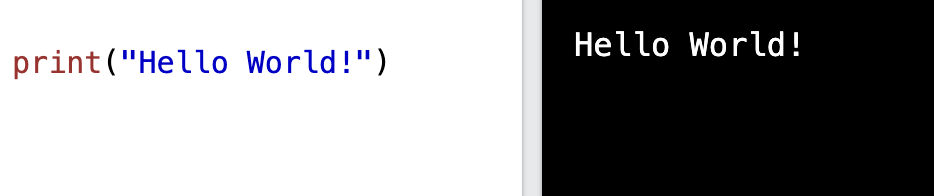
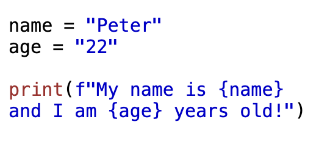
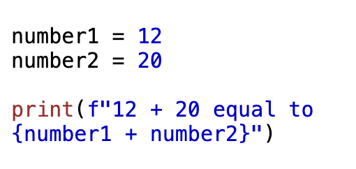
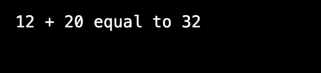

Print statements allow the user to display a output onto the screen.
The message can be a string, object however the object will be converted into a string when getting displayed on the screen.
Example of a print statement:
F strings or formatted string literals are used to simplify string formatting and interpolation. F Strings provides a concise and intuitive way to embed expressions and variables directly into strings.
Using f-string to print variables into the print statement
Output:
Evaluate expressions with f-string:
Output:
